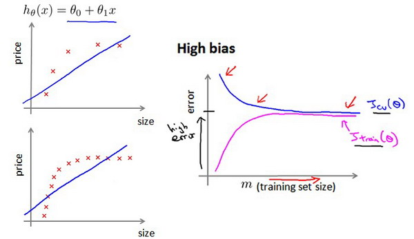

当我们运用训练好了的模型来预测未知数据的时候发现有较大的误差，我们下一步可以做什么？
获得更多的训练样本——通常是有效的，但代价较大，下面的方法也可能有效，可考虑先采用下面的几种方法。
尝试减少特征的数量
尝试获得更多的特征
尝试增加多项式特征
尝试减少正则化程度$\lambda$
尝试增加正则化程度$\lambda$
我们不应该随机选择上面的某种方法来改进我们的算法，而是运用一些机器学习诊断法来帮助我们知道上面哪些方法对我们的算法是有效的。
评估假设
为了检验算法是否过拟合，我们将数据分成训练集和测试集，通常用70%的数据作为训练集，用剩下30%的数据作为测试集。很重要的一点是训练集和测试集均要含有各种类型的数据，通常我们要对数据进行“洗牌”，然后再分成训练集和测试集。

测试集评估在通过训练集让我们的模型学习得出其参数后，对测试集运用该模型，我们有两种方式计算误差：
- 对于线性回归模型，我们利用测试集数据计算代价函数$J$
- 对于逻辑回归模型，我们除了可以利用测试数据集来计算代价函数：
还可以使用误分类的比率，对于每一个测试集样本，计算：
然后对计算结果求平均。
模型选择和交叉验证集
假设我们要在10个不同次数的二项式模型之间进行选择：

显然越高次数的多项式模型越能够适应我们的训练数据集，但是适应训练数据集并不代表着能推广至一般情况，我们应该选择一个更能适应一般情况的模型。我们需要使用交叉验证集来帮助选择模型。
即：使用60%的数据作为训练集，使用 20%的数据作为交叉验证集，使用20%的数据作为测试集

模型选择的方法为：
使用训练集训练出10个模型
用10个模型分别对交叉验证集计算得出交叉验证误差（代价函数的值）
选取代价函数值最小的模型
用步骤3中选出的模型对测试集计算得出推广误差（代价函数的值）
Train/validation/test error
Training error:
$J_{train}(\theta) = \frac{1}{2m}\sum_\limits{i=1}^{m}(h_{\theta}(x^{(i)})-y^{(i)})^2$
Cross Validation error:
$J_{cv}(\theta) = \frac{1}{2m_{cv} }\sum_\limits{i=1}^{m}(h_{\theta}(x^{(i)}_{cv})-y^{(i)}_{cv})^2$
Test error:
$J_{test}(\theta)=\frac{1}{2m_{test} }\sum_\limits{i=1}^{m_{test} }(h_{\theta}(x^{(i)}_{cv})-y^{(i)}_{cv})^2$
偏差和方差
- 欠拟合->高偏差
- 过拟合->高方差
判断高偏差还是高方差：
我们通常会通过将训练集和交叉验证集的代价函数误差与多项式的次数绘制在同一张图表上来帮助分析：

横坐标代表拟合多项式的次数，纵坐标是错误率。次数较小时会有欠拟合的现象，次数高时会有过拟合的现象。
对于训练集，当 $d$ 较小时，模型拟合程度更低，误差较大；随着 $d$ 的增长，拟合程度提高，误差减小。
对于交叉验证集，当 $d$ 较小时，模型拟合程度低，误差较大；但是随着 $d$ 的增长，误差呈现先减小后增大的趋势，转折点是我们的模型开始过拟合训练数据集的时候。
如果我们的交叉验证集误差较大，我们如何判断是方差还是偏差呢？根据上面的图表，我们知道:

训练集误差和交叉验证集误差近似时：偏差/欠拟合
交叉验证集误差远大于训练集误差时：方差/过拟合
与正则化的关系
在我们在训练模型的过程中，一般会使用一些正则化方法来防止过拟合。但是我们可能会正则化的程度太高或太小了，即我们在选择λ的值时也需要思考与刚才选择多项式模型次数类似的问题。

我们选择一系列的想要测试的 $\lambda$ 值，通常是 0-10之间的呈现2倍关系的值（如：$0,0.01,0.02,0.04,0.08,0.15,0.32,0.64,1.28,2.56,5.12,10$共12个）。 我们同样把数据分为训练集、交叉验证集和测试集。
选择$\lambda$的方法为：
- 使用训练集训练出12个不同程度正则化的模型
- 用12个模型分别对交叉验证集计算的出交叉验证误差
- 选择得出交叉验证误差最小的模型
- 运用步骤3中选出模型对测试集计算得出推广误差，我们也可以同时将训练集和交叉验证集模型的代价函数误差与λ的值绘制在一张图表上：

• 当 $\lambda$ 较小时，训练集误差较小（过拟合）而交叉验证集误差较大
• 随着 $\lambda$ 的增加，训练集误差不断增加（欠拟合），而交叉验证集误差则是先减小后增加
学习曲线
使用学习曲线来判断某一个学习算法是否处于偏差、方差问题。学习曲线是学习算法的一个很好的合理检验（sanity check）。学习曲线是将训练集误差和交叉验证集误差作为训练集样本数量（$m$）的函数绘制的图表。
如何利用学习曲线识别高偏差/欠拟合：作为例子，我们尝试用一条直线来适应下面的数据，可以看出，无论训练集有多么大误差都不会有太大改观，且$J_{cv}$与$J_{train}$的间隔较小：

也就是说在高偏差/欠拟合的情况下，增加数据到训练集不一定能有帮助。
如何利用学习曲线识别高方差/过拟合：假设我们使用一个非常高次的多项式模型，并且正则化非常小，可以看出，当交叉验证集误差远大于训练集误差时，往训练集增加更多数据可以提高模型的效果。可以看出$J_{cv}$与$J_{train}$的有一段间隔。

也就是说在高方差/过拟合的情况下，增加更多数据到训练集可能可以提高算法效果。
下一步做什么
获得更多的训练样本——解决高方差
尝试减少特征的数量——解决高方差
尝试获得更多的特征——解决高偏差
尝试增加多项式特征——解决高偏差
尝试减少正则化程度λ——解决高偏差
尝试增加正则化程度λ——解决高方差
神经网络的方差和偏差：
使用较小的神经网络，类似于参数较少的情况，容易导致高偏差和欠拟合，但计算代价较小使用较大的神经网络，类似于参数较多的情况，容易导致高方差和过拟合，虽然计算代价比较大，但是可以通过正则化手段来调整而更加适应数据。
通常选择较大的神经网络并采用正则化处理会比采用较小的神经网络效果要好。
偏斜类的误差度量
偏斜类情况表现为我们的训练集中有非常多的同一种类的样本，只有很少或没有其他类的样本。
例如我们希望用算法来预测癌症是否是恶性的，在我们的训练集中，只有0.5%的实例是恶性肿瘤。假设我们编写一个非学习而来的算法，在所有情况下都预测肿瘤是良性的，那么误差只有0.5%。然而我们通过训练而得到的神经网络算法却有1%的误差。这时，误差的大小是不能视为评判算法效果的依据的。
从上面的例子我们知道，单纯地使用误差（Error）并不能完善地评价模型好坏，现在引入两个重要的评价指标：（1）查准率（Precision）；（2）召回率（Recall），并定义：
- 阳性（Positive）：表示正样本。当预测和实际都为正样本时，表示真阳性（True Positive）；如果预测为正样本，而实际为负样本，则表示假阳性（False Positive）。
- 阴性（Negative）：表示负样本。当预测和实际都为负样本时，表示真阴性（True Negative）；如果预测为负样本，而实际为正样本，则表示假阴性（False Negative）。
- 其中正样本（y=1）为样本数量较少的类别
| 真值1 | 真值0 | |
|---|---|---|
| 预测1 | True Positive | False Positive |
| 预测0 | False Negative | True Negative |
查准率（Precision）: 在我们预测患癌的病人中，确实患了癌症的病人的比例。
召回率（Recall）: 在患癌的病人中，有多少病人被我们预测到了。
查准率与召回率的权衡
如果我们希望只在非常确信的情况下预测为真（肿瘤为恶性），即我们希望更高的查准率，我们可以使用比0.5更大的阀值，如0.7，0.9。
如果我们希望提高召回率，尽可能地让所有有可能是恶性肿瘤的病人都得到进一步地检查、诊断，我们可以使用比0.5更小的阀值，如0.3。
我们可以将不同阀值情况下，查全率与查准率的关系绘制成图表，曲线的形状根据数据的不同而不同：

我们希望有一个帮助我们选择这个阀值的方法。一种方法是计算F1 值（F1 Score），其计算公式为：
机器学习的数据
现在假设我们使用了非常非常大的训练集，在这种情况下，尽管我们希望有很多参数，但是如果训练集比参数的数量还大，甚至是更多，那么这些算法就不太可能会过度拟合。也就是说训练误差有希望接近测试误差。
另一种考虑这个问题的角度是为了有一个高性能的学习算法，我们希望它不要有高的偏差和方差。
因此偏差问题，我么将通过确保有一个具有很多参数的学习算法来解决，以便我们能够得到一个较低偏差的算法，并且通过用非常大的训练集来保证。
我们在此没有方差问题，我们的算法将没有方差，并且通过将这两个值放在一起，我们最终可以得到一个低误差和低方差的学习算法。这使得我们能够很好地测试测试数据集。从根本上来说，这是一个关键的假设：特征值有足够的信息量，且我们有一类很好的函数，这是为什么能保证低误差的关键所在。它有大量的训练数据集，这能保证得到更多的方差值，因此这给我们提出了一些可能的条件，如果你有大量的数据，而且你训练了一种带有很多参数的学习算法，那么这将会是一个很好的方式，来提供一个高性能的学习算法。